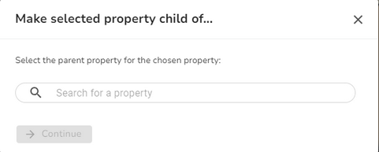
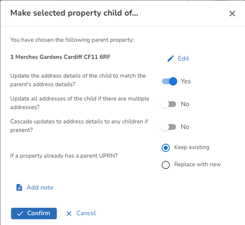

Maintaining Parent / Child Relationships |
Top Previous Next |
|
Many locations that are within the scope of the gazetteer will comprise of a number of subdivisions, or sub-buildings. This may happen “vertically” (for example in a block of flats) or “horizontally” (for example in a hospital complex with many different buildings). The complete block or site is known as the “parent record” and all of the subdivisions are known as the “child records”. The NLPG will capture all of this information. In each case there will be one gazetteer entry for the parent record in its own right, and one for each of the child records. Each will have its own Unique Property reference number. Each child is explicitly referenced back to its parent by means of the UPRN to allow the full hierarchy to be recorded. Making a property a child•First find the property you wish to make a child using the Search. You can either select the property from the search results and then pick Make child of... from the Actions on the Details tab, or you can press enter and then select the same Make child of... from the More Actions when you hover over the property in the Explorer.  •Search for the property you wish to make the parent of your selected property. As you type in the search box results are displayed underneath. •Pick the property you want and click Continue. 
Removing a child property from its parentThe reverse of this is to select a Child property and select Remove from parent from the Actions on the Details tab. |